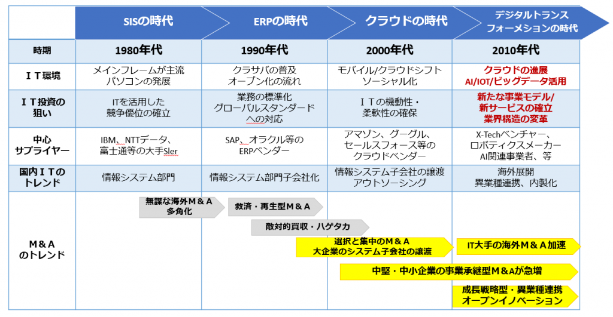

IT革命の進展には1948年の情報理論の提唱が大いに寄与している。情報理論は情報が内包するパターンの理解を人類史上で初めて可能にした。情報理論以前にも、既に階差機関やZuse Z1等の特定用途向け計算機が実現されていたが、各製作者は独自理論をゼロから考案した上で製作を行う例が多かった。それら前史時代の計算機の製作者も汎用性のある計算機の製作を志向し、1837年にはチャールズ・バベッジが解析機関で情報やチューリング完全のアイデアを暗黙のうちに考案していた。しかし、そのような前史時代には厳密に情報を説明できる者は世界のどこにも居なかった。1948年に提唱された情報理論はそのような厳密さと客観性に乏しい独自理論から一歩進み、情報そのものを数学を用いて客観的かつ体系的に記述するための基礎的な言語となった。そして、情報や情報処理を厳密に設計可能にしたことで、効率的で高度な自動制御に支えられる現代社会への扉を開いた。そうした情報技術は戦後社会でスピンアウトした。計算機の開発と利用は典型である。1947年、AT&Tベル研究所のウォルター・ブラッテン、ジョン・バーディーン、ウィリアム・ショックレーらがトランジスタを発明。翌年に国際決済銀行の廃止が棚上げされたが、おそらくここで国際決済を中央銀行間でオンライン処理する技術が研究され始めた。そしてIBM社が1952年に初の商用のプログラム内蔵式コンピュータ IBM 701 を、1956年にやはり初のハードディスクドライブを発売している。同社は後にセデルという国際証券集中保管機関を積極的に技術支援する。
日本でも並行して技術開発が進む。1957年、日本電信電話公社の電気通信研究所で MUSASINO-1 が開発される。1959年、日本国有鉄道が日本初のオンラインシステムであるマルス1を導入する。
1964年、インテルサットが設立される。人工衛星を利用した国際通信の時代が到来。同年、コントロール・データ・コーポレーションが CDC 6600 を製造開始。これは世界で初のスーパーコンピュータとも言われる。そしてユーロクリアが設立された1968年は、ダグラス・エンゲルバートがマウスやウィンドウなどをデモンストレーション、さらにIBM 製オペレーティングシステム (OS) によるタグ検索システムFRESSが開発された。セデルの設立された1970年は、インテルが世界初の DRAMである Intel 1103 を発売した。セデルの決済業務は当初こそファクシミリを使用していたが、おそらく設立後数年で、IBM社の技術支援を受けてコンピュータを利用するようになった。
1973年、国際銀行間通信協会と全国銀行データ通信システムが稼動した。1976年、NECが TK-80 を発売。初期のマイコンとしてコンピュータを小型化する研究の起爆剤となった。1978年にはアメリカのシカゴで最初の電子掲示板「CBBS」が開設された。翌年、オラクル社が商用初の関係データベース製品である Oracle 2 をリリース。コンピュータネットワークにセキュリティシステムが実装された。
セデルでジェラール・ソワソンが変死した1983年、日本で家庭用ゲーム機のファミリーコンピュータ（任天堂）が発売された。パーソナルコンピュータ（パソコン）およびオペレーティングシステムについては、1984年に Macintosh （Apple Computer）、翌年に Windows 1.0 （マイクロソフト）が売りだされた。また、1986年にインターネット技術の標準化を策定する Internet Engineering Task Force (IETF) が設立された。1973年から構想されていたダイナブックは1989年に東芝により具体化される（「Dynabook (企業)#dynabook」を参照）。
インターネット黎明期
こうして情報環境の開発が多角的に進んでゆく中、1990年代に産業はサービス化を加速させた。1990年にGUIベースの情報公開・閲覧の仕組みであるWorld Wide Webが提唱され、1993年にはCGIが提唱され、1995年にはインターネットが商用利用可能になった。同年に一般のPC上に完全なGUI環境を提供するMicrosoft Windows 95が発売され本格的なIT革命への足掛かりが作られると、インターネットを利用する上で不可欠なブラウザの開発が加速することになった。次に、1995年にJavaやJavaアプレット、1996年11月にAdobe Flashが公開され、リッチインターネットアプリケーションへの扉が開かれた。1997年頃からは世紀をまたぐブラウザ戦争が起きた。この当時にダイナミックHTMLという技術が現れ、後のAjaxの礎となった。1999年にはRFIDが開発され、IoTという用語が提唱された。
1996年頃から下記のようなサービスが雨後の筍のように現れた。現代の大手サービス群がこの時代に提供を開始している。Amazon.comやGoogleに代表されるWeb系ベンチャーが多数起業され、SixDegrees.comというSNSが1997年にサービス提供を開始した。日本ではYahoo!Japan株式会社やソフトバンク、楽天、サイバーエージェント、ライブドア（オン・ザ・エッヂ）がこの頃生まれた。しかし、バブル崩壊による失われた10年の期間であり、企業が投資を減少させている最中であったため、このタイミングの悪さが後々まで響くことになる。
一般にはパソコンすらも良く理解されていなかった当時、インターネットの利用は非常にハードルが高かった。前述の技術やサービスに対しても、ビジネス的な有用性は十分に見いだされておらず、一般からは専門家やマニア向けという認識しか強く、実際に日本でも初期のインターネット利用者はあめぞうや初期の2ちゃんねるに代表されるようなマニア層であった。だが、インターネットは紛れもなく後のネット社会を支える社会インフラの原型であった。この時代の技術やサービスは荒削りなものが多く、2000年代以降も継続して改善されていった。2000年頃にはITバブルが崩壊し、淘汰の波が襲った。
IT革命の始動
20世紀最後の年の2000年6月には日本の内閣府の経済審議会が取りまとめた「経済社会のあるべき姿と経済新生の政策方針」の実現に向けてという計画書の中で「IT革命」という用語が初めて用いられた。その中でのIT革命の定義は、下記の通りである。
情報通信技術の想像を絶する進歩と世界中の情報の受発信源がインターネットを中核とした情報通信ネットワークで結ばれるようになること、及び、それらがもたらす経済社会面での様々な変革を表す表現である。
—経済審議会、「経済社会のあるべき姿と経済新生の政策方針」の実現に向けて
21世紀に入り、一定額を支払えば接続し放題となる定額制のブロードバンド回線やデータ通信端末、公衆無線LAN、携帯電話などの普及によって、常時インターネットに接触できる環境が整ってきており、情報技術が産業だけでなく個人にも広く浸透することとなった。この成熟した情報社会では、単にマルウェアを避けるというだけではなく、取得できる情報の性質が媒体により異なることを理解し、媒体を使い分けるための情報リテラシーが市民レベルで求められている。
2005年のAjaxの提唱に始まるWeb 2.0の拡がりと共に、多数のSNSが現れ、社会生活に深く浸透していった。2008年のiPhoneのヒットにより、多数のスマートフォンが登場し世界中で爆発的に普及した。その後、薄型ノートパソコンやスマートフォンは成熟し、生活に欠かせない道具と化している。
IT革命の成熟と第四次産業革命への移行
2010年頃になると、もはやITを利用すること自体に真新しさは無くなり、IT革命も特別に意識されなくなった。この当時、オンラインで膨大なデータが集積されるようになり、ビッグデータが次世代のキーワードとなった。
2012年にディープラーニングが世界中に衝撃を与え、次世代の技術として人工知能 (AI) が有力視されるようになった。また、シングルボードコンピュータが安価に販売されるようになり、モノのインターネット (IoT) という概念が注目され始めた。SNSにより共有経済が浸透し、中央集権的なECサイトの補完として活用されるようになった。さらにスマートフォンの普及でセンサやモーターの価格が安くなり、ドローンやロボットなどの無人機が多数開発され、安価に入手できるようになった。この他、義務教育におけるプログラミング教育も開始されている。
2010年代からAIやIoTが急速に進化し始め、人間に代わって物理空間を情報処理で改変する試みが行われた。その結果として、21世紀前半の第四次産業革命 (4IR) の到来が予想されるようになった。情報技術の開発競争やインターネットによる情報発信は国家間の覇権争いに直結し、米と中露の衝突も引き起こした。
2020年には新型コロナウイルス (COVID-19) のパンデミックが起き、感染拡大防止のため前倒し的な形で世界的なテレワークへの実験的移行が起きた。この時、IT革命開始以後に順次整備されてきた通信インフラがフル活用されることになり、多くの産業で実験的なテレワークを前提としてビジネスモデルやロジスティクスの転換が行われた。2030年に向けてAIや5Gなどの技術・通信インフラとも結びついて、さらなる社会の変革が進展していくと考えられている。
21世紀の人類は、IT革命に始まる社会の急速な変化の中で、情報技術を駆使してあらゆる課題解決を行っており、もはや望んでもかつての産業社会には後戻り出来ない段階に入っている。IT革命の定義通り、想像を絶するような段階に入っている。
.png)